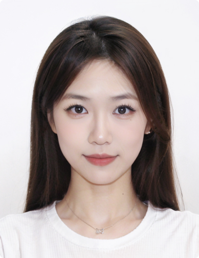

Hello, my name is Wang Yuanyou, I am the CXO in the team (I can manage
anything regardless of the head of the department).
About me：I have a strong interest in eventhing and I'm always looking
for ways to become who I wanted to be. I'm also a big fan of doing
myself.
My skills：I have a lot of skills, but I don't have any skills, such as
I can use basic software such as AI, PS, C4D, Arduino, etc.
Hobby：I have a wide range of hobbies, I like to try everything I like, for
example, I am good at manual operations, I like to do it myself, at the same
time I also love photography and painting, in the face of new environments,
I like to record my own life.